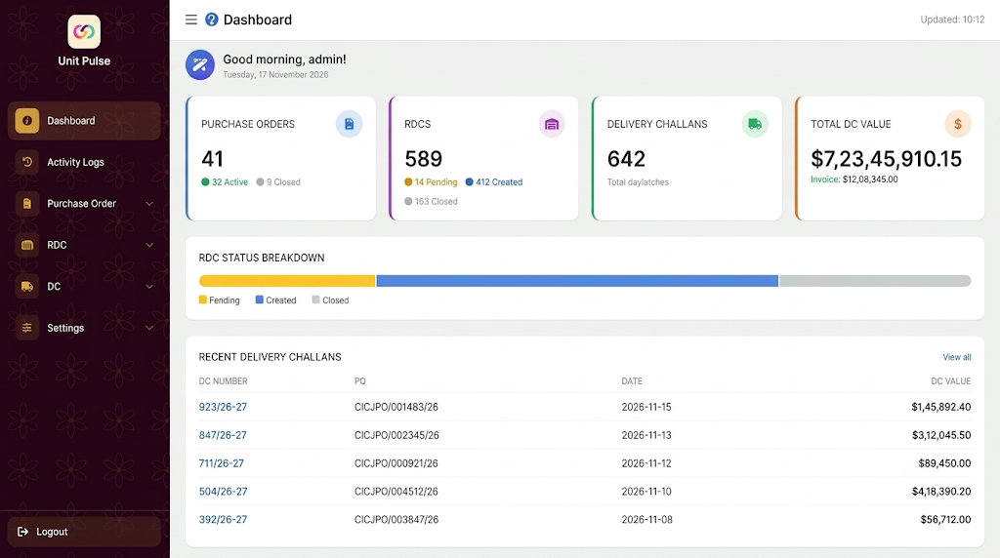

From purchase order to delivery challan, in one connected system
Record orders, track incoming items and raise delivery challans without retyping. Quantities and values are calculated for you, and what's left is always accurate.
For job-work, processing and contracting units.

A central database, backed by a private Hyperledger Fabric network
Unit Pulse runs on both a centralised database and a private Hyperledger Fabric blockchain network spanning client organisations. The result is transparency within the consortium and protection against data manipulation, with each organisation keeping its own identity, access and contract rules.
Centralised database
Fast day-to-day operations: search, reports, printing and exports run on a central database.
Private Hyperledger Fabric network
Key records are also written to a permissioned blockchain shared across client organisations.
Tamper-evident records
Once committed, entries can't be silently changed, which protects against data manipulation.
Shared transparency
Every organisation in the consortium sees the same verified record of orders, items and challans.
Own trusted CA
Each organisation has its own Certificate Authority, so identities are issued and trusted by their owners.
Channels and sub-channels
Data is shared only with the organisations that need it, split across channels and sub-channels.
Contract policies, written as chaincode, set who can create, change or approve each record, and the network enforces them.
Trusted and used by industries in multiple global locations
From job-work and processing units to contracting businesses, Unit Pulse keeps orders, incoming items and deliveries accurate across sites and regions.
Paperwork makes it hard to know where an order stands
No clear view of PO usage. Challans, PDFs and spreadsheets make it hard to see how much of an order is used and what is still pending.
Retyping causes mismatches. The same details are entered at every stage, so ordered, received and delivered quantities drift apart.
Edits and cancellations break the numbers. Changes made later leave quantities and billing out of sync.
Purchase Order
RDC
Delivery Challan
One linked flow — each stage knows the one before it.
One linked flow, so the numbers stay right
Every Delivery Challan links back to its RDC and Purchase Order, so the system always knows what is left.
Enter data once and it flows through to challans and reports
Quantities and values are calculated, not worked out by hand
"Quantity remaining" stays correct after edits and cancellations
Delivery challans generated and printed in minutes
Everything each stage needs, built in
PO capture
Enter a purchase order manually or upload a PO PDF and let the system read the details.
RDC tracking
Record incoming items with quantities, units and services. Load them in bulk from a PDF. See pending and delivered items by department. Add one-off items through Manual RDC Item Entry.
Delivery Challan builder
Pick RDC items and services; quantities, unit conversions and value are worked out automatically. Chargeable and non-chargeable items can share one challan.
Safe edits and cancellations
Edit a challan and reserved quantities adjust automatically. Cancel one and quantities return to the RDC and PO. A cancelled challan can't be edited or reprinted.
Print and export
Print-ready, multi-copy challans in standard paper sizes. Export Delivery Challan and RDC data to Excel.
Audit and access control
An audit log of key actions, secure login and protected sessions. Admins manage credentials and access.
How Unit Pulse works
Record the purchase order
Add it manually or from a PDF, with services, rates and quantities.
Log incoming items
Add RDC items received from the client against that PO.
Raise the delivery challan
Pick items and services; the system calculates quantities and value.
Track what's left
Remaining quantity and pending deliveries stay current. Print or export when needed.
Inside the application
Note: these screenshots use sample data and have been modified for illustration. Contact us to see the actual application.
Less chasing, fewer errors
Less manual work
Enter data once; it flows through to challans and reports.
Fewer errors
The system calculates quantities and values.
Faster paperwork
Challans are generated and printed quickly.
Clear accountability
Audit trail and status tracking show what happened and when.
White-label by design: one platform already runs more than one business, each under its own branding.
Our partners
A white-label platform: partners run Unit Pulse every day in Hosur Industrial Area, Tamil Nadu, each under its own branding, data and users, from the same system.
See Unit Pulse on your own paperwork
Book a short demo and we'll walk through your purchase order to delivery flow.